SlingSip onboarding and local profile
Actual isolated Electron screenshots refreshed during focused onboarding QA on 8 October 2026. Existing dashboard, assets and hydration records are retained. Focused QA report · QA validation · Original implementation
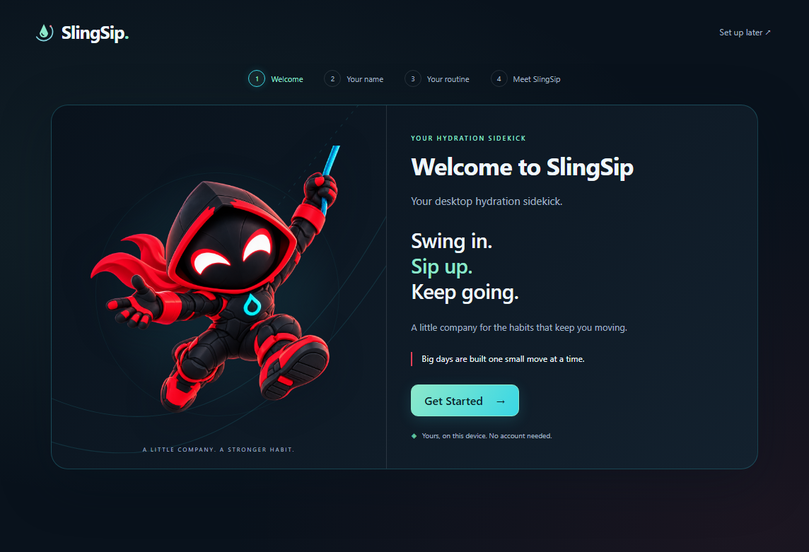
WelcomeOriginal short copy, local setup, existing logo and supplied artwork. 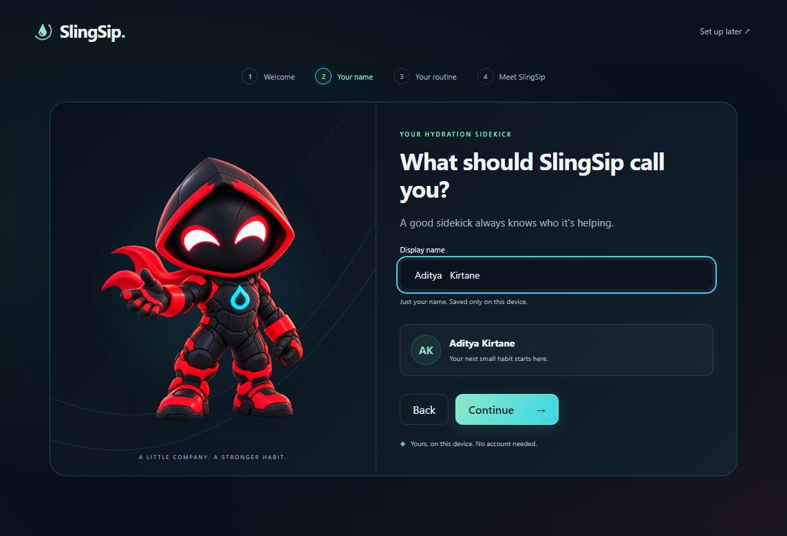
Your nameTrimmed preview and local profile, with idle mascot. 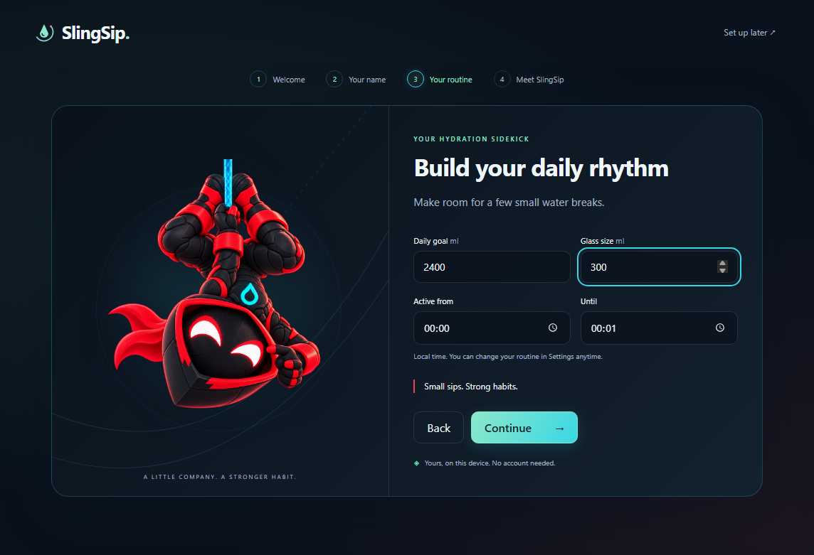
Your routineExisting hydration settings API; no duplicate settings. 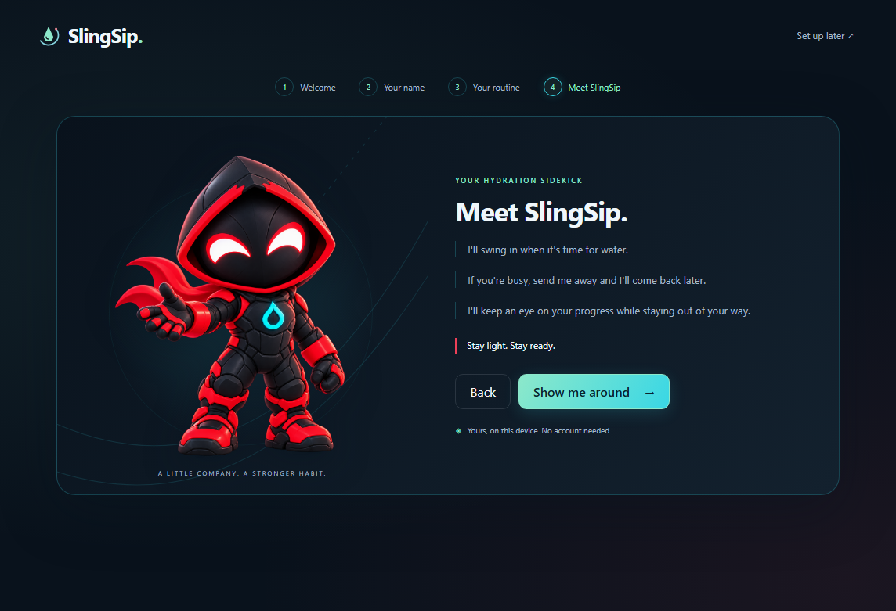
Meet SlingSip 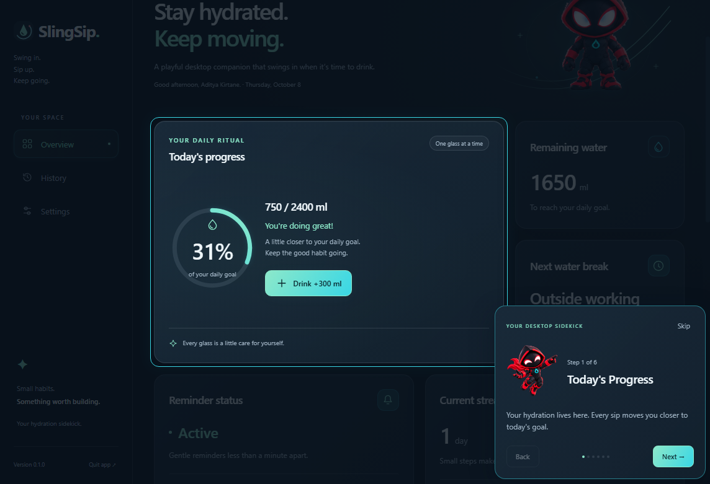
Dashboard tour: progress25% larger mascot; slightly stronger target border and glow. Native dialog and positioning retained. 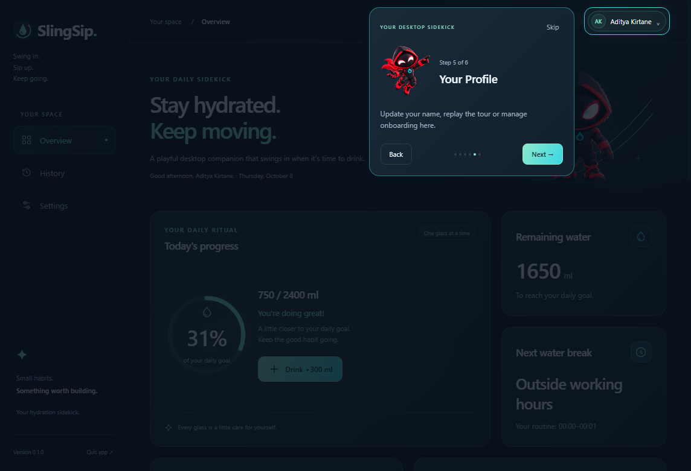
Dashboard tour: profile 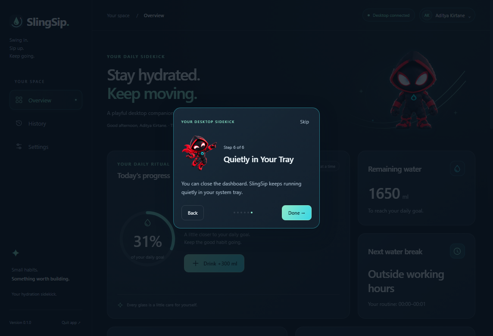
Dashboard tour: system trayThe native tray is outside the renderer; this step is centered. 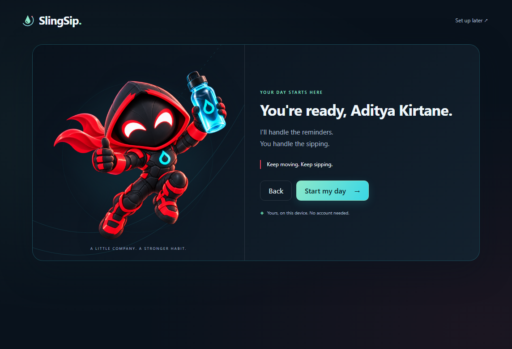
ReadyKeep moving. Keep sipping. Only Start my day persists onboarding completion. 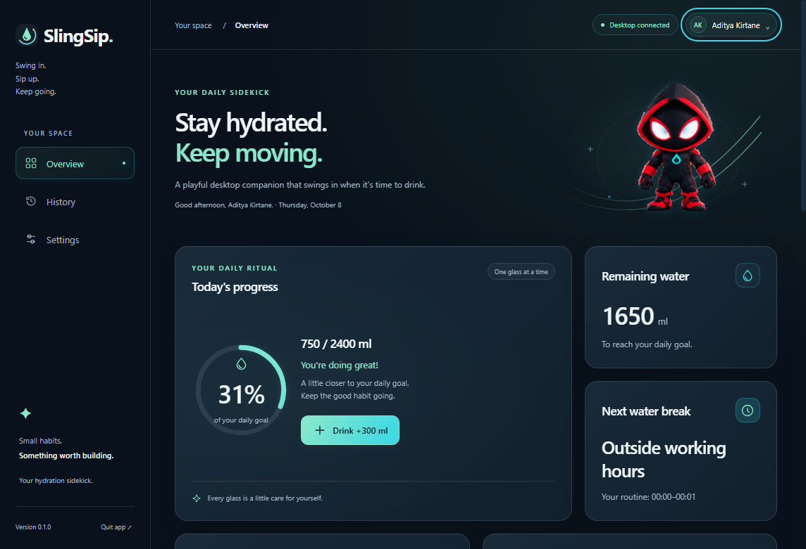
Personalized dashboardThe saved 750 ml and historical records survive relaunch. 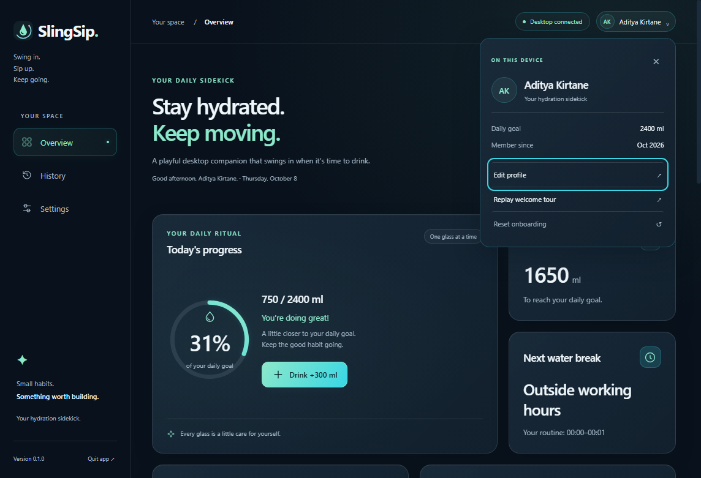
Local profile menu 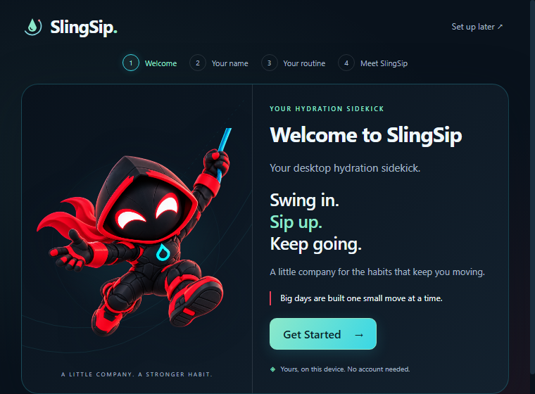
Minimum window: 760 × 560Scrollable where necessary; primary action stays reachable. 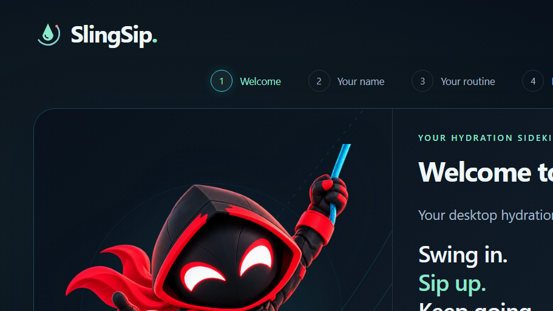
150% scaling proxy 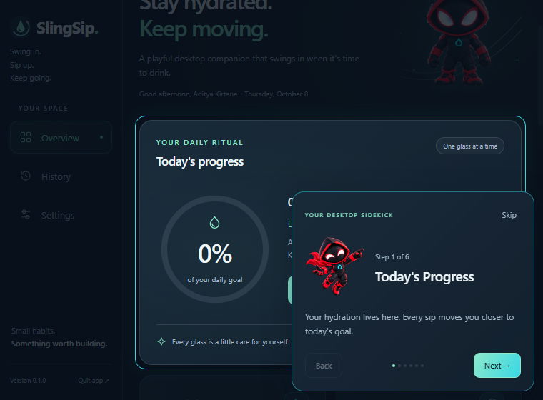
Tour at minimum windowWhen no adjacent space fits, the card remains bounded.